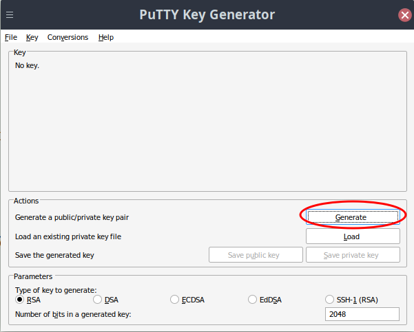
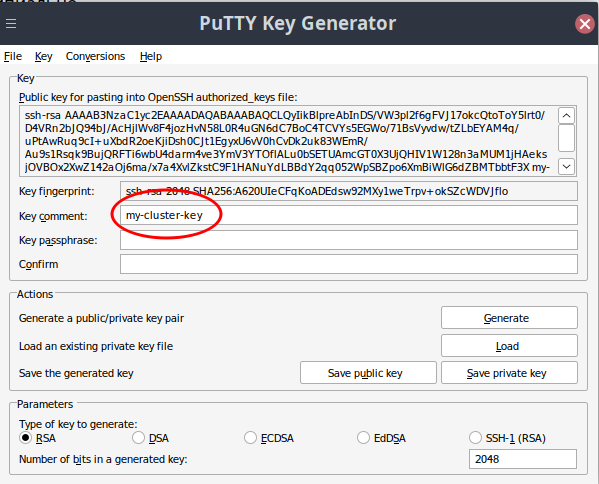
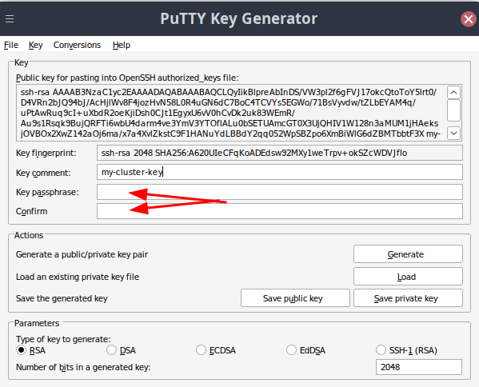
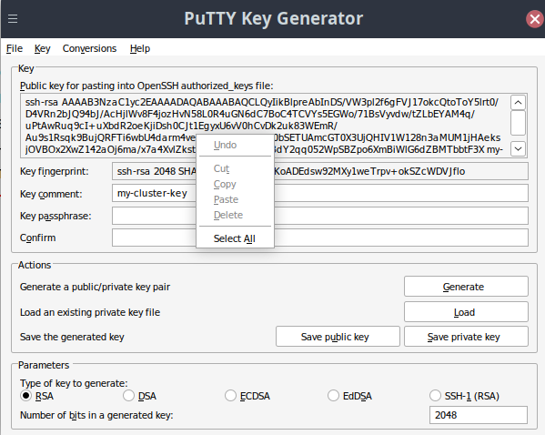
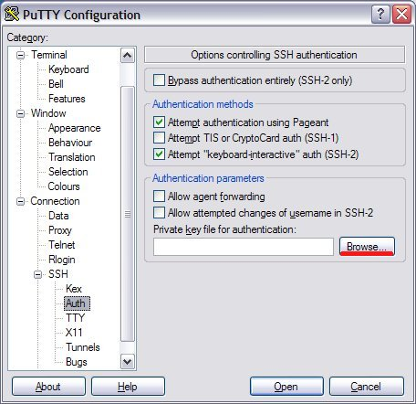

- Install puttygen program (is included into putty package and WinSCP)
- Run puttygen, press "Generate" (Fig. 1)

Fig. 1
- Move the mouse over the empty area, while the progress indicator goes to the end.
- it is strongly recommended to change the key comment (Fig. 2),
then you always can identify your key.

Fig. 2.
- Use a good password, fill it into "Key passphrase" and "Confirm passphrase" fields (Fig. 3)

Fig. 3
- Save the private key using the "Save private key" button.
- Do not press "Save public key", instead select the all text in the
big text field (Fig. 4), then copy it into clipboard (Ctrl+C), open Notepad
or any other text editor, create a file, paste copied content and save it as
a public key.

Fig. 4
- To specify the key in the putty ssh client, go to "Connection->SSH->Auth"
and click "Browse", select your private key file (Fig. 5). Then return to "Session" and enter
your ssh server address, user name and any other parameters you need.
I recommend to save session parameters, entering a name into "Saved Sessions" field and pressing "Save".

Fig. 5